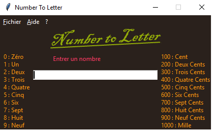

Number to Letter, comme son nom le suppose est un logiciel qui permet de faire la correspondance entre un nombre en chiffre
et en lettre. L'utilisation de ce logiciel est intuitif. Vous entrer un nombre dans le rectangle blanc, au fur et àmesur que vous
entrer un nombre, la correspondance en lettre est affichée.

La première image est celle de Number to Letter au démarrage et la deuxième est ce que retourne Number to Letter quand je tappe 1234.
Vous pouvez télécharger l'executable du logiciel, ou alors voir le code du logiciel sur GitHub.
 La première image est celle de Number to Letter au démarrage et la deuxième est ce que retourne Number to Letter quand je tappe 1234.
Vous pouvez télécharger l'executable du logiciel, ou alors voir le code du logiciel sur GitHub.
La première image est celle de Number to Letter au démarrage et la deuxième est ce que retourne Number to Letter quand je tappe 1234.
Vous pouvez télécharger l'executable du logiciel, ou alors voir le code du logiciel sur GitHub.